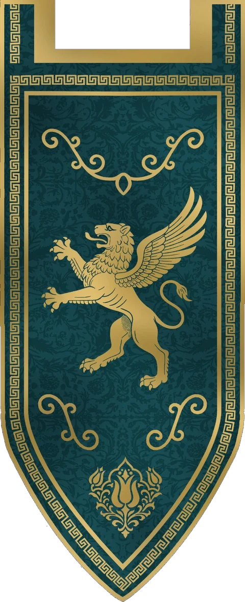
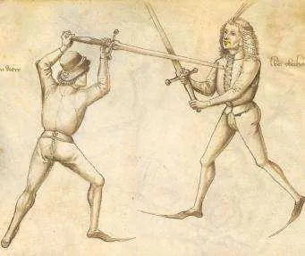

LongswordLongsword
The two-handed sword and the most widely studied HEMA weapon. We build on the Liechtenauer and Meyer traditions.
We are the first HEMA club in Antalya, Türkiye. We train the longsword from the manuscripts of medieval and Renaissance masters, every Saturday at 10:00 at 4x4 Sport Center in Uncalı.

Lycian Fighters is the first Historical European Martial Arts (HEMA) club in Antalya. The name honours ancient Lycia, the civilisation at the roots of the Antalya region.
It all began with Antalya's first longsword seminar on 4 April 2026. The club's founder and president is İsmail Can Doğan. The idea took shape through his contact with Burak Yarar, founder of the Istanbul-based Free Fighters Guild and one of the people who have practised and taught this discipline in Türkiye for more than ten years.
Today we train regularly in an indoor sports hall in Uncalı. Our main focus is the longsword, and we plan to add the sabre and the Turkish sword (kılıç) to the programme, so we will not limit ourselves to European sources alone.
“We don't do stage shows or historical re-enactment. We study the old books, test the techniques with modern protective gear and compete in tournaments.”
HEMA covers the armed and unarmed fighting systems that developed in Europe from the 14th to the 19th century.
These systems are reconstructed from original fencing manuscripts written by the masters of the time. Medieval and Renaissance sword masters passed on their knowledge by teaching, by serving as mercenaries or in the service of the nobility. Most of HEMA's sources today come from the texts these masters wrote.
The key difference from Asian martial arts: Europe's historical fighting traditions did not survive through an unbroken master-to-student lineage. The discipline is therefore rebuilt from source texts and from depictions in period art. Part of the tradition evolved into modern sport fencing.
What sets HEMA apart is testing. Practitioners study the old books, try the techniques in free sparring with modern protective equipment and compete in tournaments, which shows whether a technique actually works against a resisting opponent.
Our focus is the longsword. These are the other main disciplines practised across the HEMA world:
The two-handed sword and the most widely studied HEMA weapon. We build on the Liechtenauer and Meyer traditions.
Disciplines we plan to add. Our club will not be limited to European sources.
The slender, thrust-oriented sword of the Italian and Spanish schools.
A one-handed sword with a small fist shield.
The cavalry and infantry sword of the 18th and 19th centuries.
The single-edged, one-handed cutting sword of the German tradition.
Spear, poleaxe and halberd, especially in armoured combat.
Unarmed wrestling and close-combat techniques, also the basis of wrestling at the sword.
If it's your first time, just send us a WhatsApp message beforehand and we'll tell you about the session and equipment.
The two core sources we train from, collected here with every drawing and an explanation for each. Guards, cuts, handwork, wrestling and armoured combat, drawing by drawing.

11 guards, 9 cuts, a handwork glossary, wrestling scenes and 16 full engraved plates. 64 images.
Open the atlas →
Four guards, five master cuts, tactics, wrestling at the sword and armoured combat. 27 categories, 138 drawings.
Open the atlas →Coverage in the local Turkish-language newspaper Antalya Gündem.
The club's founding, its link with Burak Yarar, 24 active members and the 2027 tournament goal.
Antalya Gündem · 22 July 2026 · in TurkishThe history of HEMA, how it differs from Asian martial arts and the disciplines studied.
HEMA stands for Historical European Martial Arts: the reconstruction of armed and unarmed fighting systems that developed in Europe between the 14th and 19th centuries, based on manuscripts written by the masters of the time.
Lycian Fighters, Antalya's first HEMA club, trains at 4x4 Sport Center in Uncalı (Molla Yusuf Mah., Hürriyet Cd. No:51, Konyaaltı, Antalya).
Every Saturday at 10:00. If it's your first time, just send a WhatsApp message to +90 534 522 51 73 beforehand.
Mainly the longsword, based on the traditions of Joachim Meyer (1570) and Johannes Liechtenauer. We plan to add the sabre and the Turkish sword (kılıç).
No. HEMA is a martial art and a sport. Techniques are learned from historical sources, tested in free sparring with modern protective gear and used in tournaments.
Yes, visitors are welcome. Message us on WhatsApp (+90 534 522 51 73) or Instagram (@lycian.fighters) before you come.
Write to us for a trial session, a seminar or a collaboration.